The Fill, Stroke paint, and Swatches palettes let you apply,
modify, and save colors in your artwork. You can paint with HSL, RGB, CMS, RGB,
or CMYK colors; patterns; and gradients of blended colors. With the Brushes
palette, you can apply art or patterns to the path of an object.
In this tutorial on the work area, you will learn how to:
Paint with, create, and edit colors.
Name and save colors and build a color palette.
Copy paint and appearance attributes from one object to another.
Adjust the saturation of a color.
Paint with gradients, patterns, and brushes.
Getting Started
In this lesson, you’ll learn about the variety of paint options in
Inkscape as you paint an illustration of four hats. First, open the finished
art file for this lesson to see what you’ll create.
If you like, choose View > Zoom > Zoom Out to
make the finished artwork smaller and leave it on your screen as you work.
(Use <Shift>-roll the mouse wheel and roll without using the
<Shift> key to move the artwork where you want it in the window.)
If you don’t want to leave the image open, choose File >
Close.
Choose File > Save As, name the file
Hats.svg, and save it in a convenient location.
Filling with Color
Painting objects with colors, gradients, or patterns is done using a
combination of palettes and tools — including the Color palette, the
Swatches palette, the Gradient palette, the Stroke palette, and the paint
buttons in the toolbox — that let you select and change an object’s
paint and line attributes.
You’ll begin by filling an object with color. Filling an object paints
the area enclosed by the path.
The Color palette appears automatically on-screen when starting Inkscape.
(If the Color palette isn’t visible, display it by choosing
View > Show/Hide > Palette; a check mark indicates
that the palette is open on-screen.)
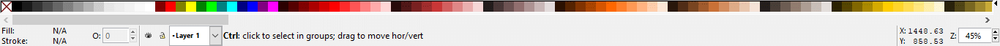
Left-most portion of the Color palette. Note the None
color box on the far left.
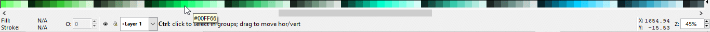
Scrolling right on the Color palette to the middle. See how you get a pop-up
box showing you the hexadecimal code for the color pointed at.
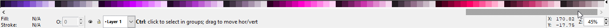
Scrolling right on the Color palette.
Choose Edit > Preferences > Tools > Selector
> Per-object selection cue > None. Exit out of the dialog window by
clicking on the X box in the upper right-hand corner of the dialog box.
The bounding box is useful for moving and resizing objects. You won’t
need this option for this tutorial.
Choose the Select tool () in the toolbox, and then click on the
rectangular border around the top left block in the artwork to select the
object. Choose Object < Fill and Stroke.
The selected object’s paint attributes appear in the
toolbox.
In the Object < Fill and Stroke dialog box, notice that
the Fill tab is active, indicating that it is selected. (This is the
default.) The RGB tab is active, indicating that we are using the
Red-Green-Blue mode of identifying color (this mode is Inkscape’s
default way of describing color). The Opacity box indicates that the
border color is 100% opaque. Note the R, G, and B color settings. The A
(Alpha channel or Opacity setting) is set to 100%. The Blur (%)
setting is set to 0.
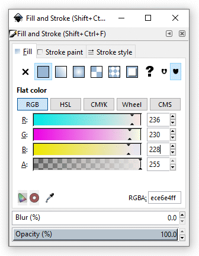
The Fill Dialog box.
The Opacity and Blur settings both can affect the color of
your artwork. You’ll change transparency and blurring later in this
lesson. For more information on using Opacity, see Help > Inkscape
Manual > Comprehensive Index > O > Opacity > Display. There is a
lot of information in the manual, so be prepared for a deluge of good
information and technique.
Click on the Stroke paint tab. The Stroke paint color icon is
selected and the Opacity is set to 100%. See how the RGB color settings are
different from the Fill tab color settings, reflecting the color of the box
border.
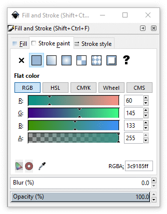
The Stroke Paint Dialog box.
Click on the Stroke style tab. See how the box border has a width of
5.000 pixels. Immediately underneath the Stroke width fields, you can
see that corner joints are set to a square Miter join. We shall discuss
the Caps, Dashes, and Markers fields later in the tutorial.
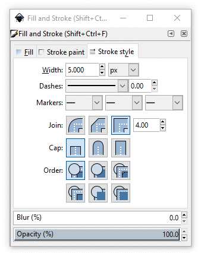
The Stroke Style Dialog box.
We will use the CMYK color scheme in this tutorial. CMYK stands
Cyan, Magenta, Yellow, and blacK. CMYK colors are
known as process colors in that cyan, magenta, yellow, and black inks are
typically used for color separations in the printing industry. Click on the
Fill tab, and then on the Flat color icon. Click on the
CMYK button to activate the CMYK color feature. The CMYK sliders in the
Fill palette show the colors’ percentages of cyan, magenta, yellow,
and black. The Style Indicator, in the lower left of the screen, displays the
current color for the fill and stroke.
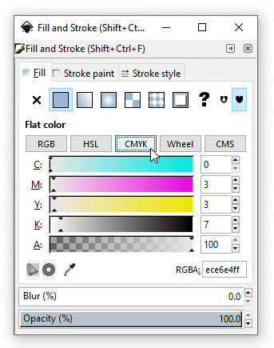
The CMYK Option Dialog box.
For more information on color schemes, see Help > Inkscape Manual
> 10. Attributes > Fill and Stroke Paint.
Now click a yellow color in the color bar to select the color. You can
adjust the color by dragging the CMYK sliders in the Color palette. (We
selected a yellow color with these values: C = 0%, M = 2%, Y = 49%, K = 0%,
and A = 100%.) The color is updated in the Fill box in the Attribute box and
in the Color Palette, as well as in the artwork.
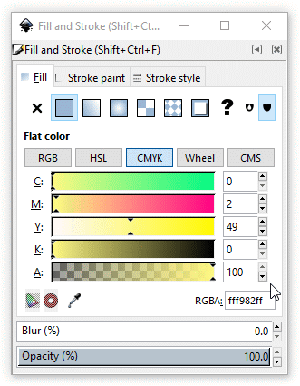
The updated Style Indicator, artwork, and Fill
palette.
The paint attributes you choose are applied to all new objects you create
until you change the attributes again. You will see the new paint attributes in
the Attribute box in the lower left-hand corner of the screen.
Stroking with Color
Next, you’ll outline the squiggly area around the bottom left hat.
Painting just the outline of an object is called stroking.
Using the Select tool (), click the squiggly shape around the hat in
the bottom left rectangle to select it.
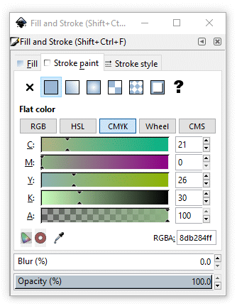
Select the squiggly shape in the bottom left
rectangle.
The Fill box in the Style Indicator displays a pale green color. The
Stroke box is transparent against the background and has the word
None, which is the current color value of the object’s
stroke.
You’ll start by exchanging the fill color and the stroke
color.
Click on the Stroke paint tab in the Color palette. Click on the
Flat color icon in the palette. If you haven’t been working with
stroke colors earlier, the Color palette for stroke color will show you that
the squiggly shape now has a black stroke, as you can see below.
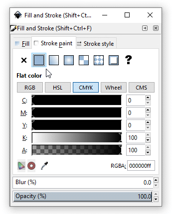
The squiggly shape has a black stroke.
Click on the Dropper tool icon ().
The icon now has a dotted outline showing that it is active ().
Move the cursor onto the squiggly shape. Note how the cursor has
changed into an eyedropper with a crosshair at its tip (the color selection
point). The dotted square to the right indicates that the
stroke color is to be changed.
Click on the squiggly shape and see how it expands a little bit as
the non-colored stroke now has the same color as the inside of the shape.
The Style Indicator and Stroke paint palette have updated
accordingly.
The squiggly shape now has a green fill and a green
stroke.
We now eliminate the fill color.
Click on the Fill tab and then click on the No paint
button. There is a green stroke, but no fill color.
The squiggly shape now has no fill.
The Fill box now has no fill (a fill of “None”), and the
Stroke box has a pale green color. (The color will become apparent in the
next step.) With a fill of None, you can see through to the fill
underneath – in this case, the gray color of the rectangle’s
fill.
Now you’ll change the weight of the curve that you just stroked
using the Stroke style palette. Stroke weight is the
thickness of a line. The Stroke style palette is grouped with the
Fill and Stroke paint palettes. The green curve has a
weight of 1 pixel.
With the squiggly shape still selected, click on the
Stroke style tab. If the shape has been deselected, then the
features in the Stroke style palette will be appear grey and
unhighlighted. Click on the curve to reselect it, if this is the case.
Features in the Stroke palette become highlighted, and thus
active.
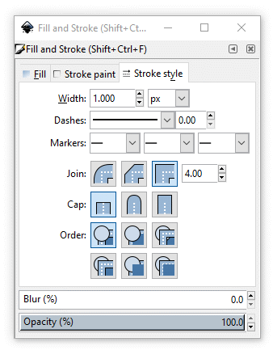
Stroke style palette.
Type 7 in the Width text box and press
<Enter> or <Return> to change the stroke weight to 7 pixels.
The squiggly line now stands out.
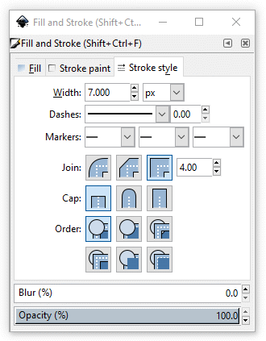
Stroke width changed to 7 pixels and result.
Next, you’ll use the Stroke style palette’s options to
change the line from solid to dashed.
Click on the Dashes drop-down arrow to bring up (or down) a
selection of dashed line styles. Scroll down to see the different styles
available to you to choose from.
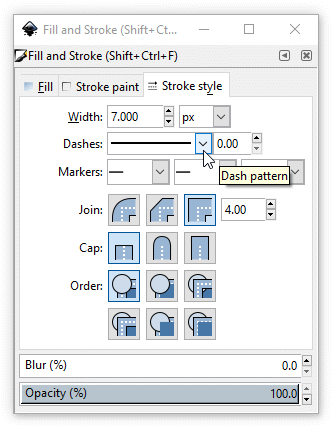
Available dashed line styles.Top of list.Bottom of list.
Select a dashed line style. The curve
immediately changes to the style you selected.
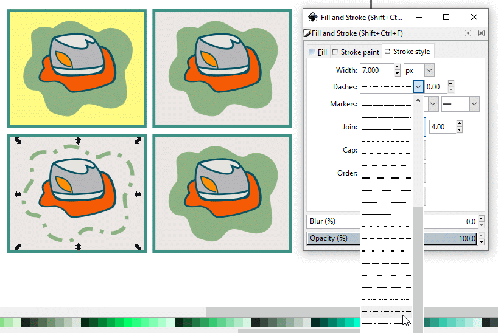
Selecting a dash style for the curve.
Click on the Round cap option. The dashed curve now has
rounded ends on its segments. The result doesn’t fall so jarringly
on the eyes.
Selecting a segment cap style for the curve and resulting
appearance.
You can select objects by a common paint attribute (such as their stroke
color or weight) and change them all at once.
Select the border of one of the rectangles, and click the Stroke
style tab.
In the Main Menu, choose Edit > Select Same >
Stroke Color to select the strokes of all the objects that have the
same stroke color in the artwork (in this case, all of the rectangles).
In the Stroke style palette, type 2 in the
Width text box and press <Enter> or <Return>, and change
the unit of measurement from px (pixel) to pt (point) to
globally change the stroke weight to 2 points.
Click away from the artwork to deselect it, and choose File
> Save.
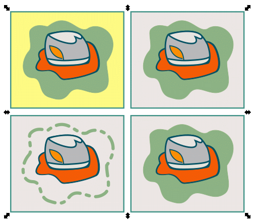
Globally changing rectangle stroke width to 2
points.
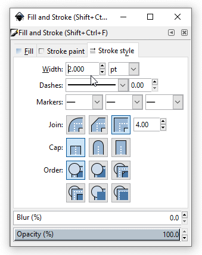
Changing rectangle stroke width to 2 points.
Building Custom Swatches
You’ll start to create a custom color using the CMYK sliders in the
Color palette. First you’ll mix a fill color.
In the Fill and Stroke palette, click the Fill tab to
make it active, if it isn’t already.
Using the Select tool (), click the middle of the hat in the bottom
left rectangle to select it.
Color attributes for the middle part of the lower left
hat.Selecting the middle part of the lower left
hat.Fill palette for the middle part of the lower
left hat.
In the Fill palette, notice that the hat color is grayscale –
that is, a percentage of black – and only the K (black) slider shows
a value. The color bar changes to display a scale ramp from white to black.
The other colors have a 0 value.
Now you’ll mix colors using the CMYK color model.
The Fill and Stroke paint palettes let you edit and mix
colors – either colors that
you create or colors that you have selected from a Swatches palette, from
an object, or from a color library. In this case, you’re selecting
colors using the CMYK color model.
In the Fill palette, drag the CMYK sliders to select a light
orange color, or type values in the text boxes and press <Enter> or
<Return> to apply the changes. (We specified C = 0%, M = 25%, Y = 54%,
and B = 0%.)
Color attributes for the middle part of the lower left
hat.The middle of the lower left hat changed to orange.Fill palette now registers orange.
You can use the different color models (RGB, HSL,
CMYK, Wheel, CMS) in conjunction with the Fill palette sliders to
precisely select a color by its different color values.
Click away from the artwork to deselect it, and choose File
> Save.
You can use the different color models in conjunction with the Color palette
sliders to precisely select a color by its different color values. However, if
you mix color models (such as CMYK and RGB) in the same file, Inkscape will
convert the colors to the RGB mode in which the file is saved, RGB being
Inkscape’s native color storage mode.
Saving and Naming a Color Swatch
The Swatch palette stores the colors, gradients, and patterns that
have been preloaded into Inkscape, as well as those you create and save for
reuse. New colors added to the Swatch palette are saved with the current
file. Opening a new artwork file displays the default set of swatches that
comes with the Inkscape program.
You will now add the light orange color you just mixed to the Swatch
palette so it will be stored with this artwork file. You can select a color to
add from either the Fill or Stroke paint palettes. Even though
you deselected the artwork, the light orange color is still the current color
in the Fill box in both the Style Indicator and the Fill palette.
If the artwork is deselected, select the orange area you just created
in the middle of the lower left hat. Note how the Style Indicator and Fill
palette change to reflect the color status of the orange area.
Color attributes for the middle part of the lower left
hat.Orange area of the lower left hat selected.Fill palette registers orange.
Click on the Swatch icon in the Fill palette (). The Swatch
palette comes up with the new light orange color added to the Swatch
fill list.
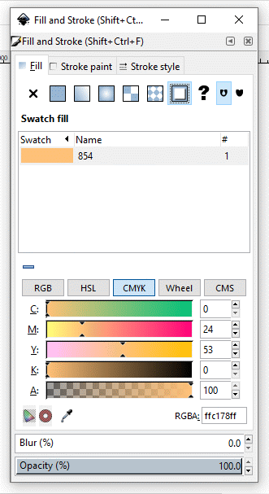
New swatch added to swatch list.
Click in the Name field in the Swatch fill palette to highlight
the number, type in something like “background-orange”, and
click away from the field to set the name.
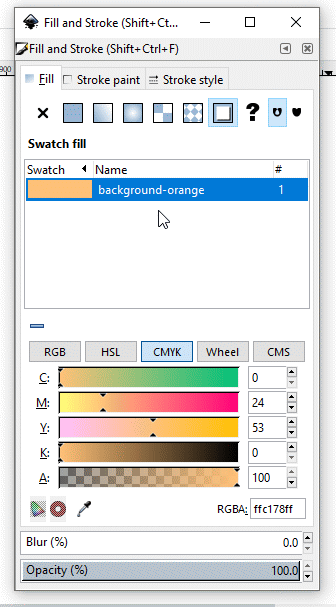
Naming the background-orange swatch.
If you create a series of new colors that are subtley different from each
other, naming them in an organized way can help you keep track of them in
your custom swatches palette.
Copying Paint Attributes
Inkscape lets you copy paint attributes of objects (such as their fill and
stroke colors) in various ways and apply the attributes to other objects.
You’ll use the Dropper tool to copy colors from your artwork into the
Fill palette. Also called sampling, copying colors lets you
replicate paint attributes even when you don’t know their exact
values.
In the bottom left rectangle, click the gray top of the hat with the
Select tool () to highlight it.
Select top of hat.
Select the Dropper tool () in the Fill palette. The
highlighting arrows around the top of the hat disappear temporarily.
By default, the Dropper tool samples the color fill and stroke attributes
of an object.
Select Dropper tool.
Put the Dropper tool on the red brim of the hat and click to replace
the color of the top of the hat. Highlighting arrows appear again around the
hat top.
Dropper tool on red brim of hat.Result.
Copying Appearance Attributes
Inkscape lets you copy appearance attributes that include both the fill and
the stroke of an object as well as its transparency and effects.
You’ll create a drop shadow shape and change its transparency. Then
you’ll apply the shadow's appearance to another shape.
Select the Select tool () in the toolbox, and click the hat brim in the
upper right rectangle.
With the hat brim selected, press <Ctrl>-d to make a copy of the
brim (think d for duplicate), and drag the copy slightly down
and to the right. Release the mouse button to leave a copy of the hat brim.
This copy will become a drop shadow.
Choose Object > Lower 5 times to move the shadow
shape underneath the hat brim. You should still be able to see both the
shadow shape and the hat brim.
With the object (in this case, the hat’s shadow) still selected,
use the Stroke paint palette to change its stroke to None by clicking
on the No paint icon.
Click on the No paint icon.Hat brim edge is not painted.
Change the fill to a medium brown. (I used C = 0%, M = 58%, Y = 90%,
B = 35%, A = 100%.)
Fill color set to medium brown.Hat brim shadow set to medium brown.
Using the Opacity (%) control at the bottom of the Fill
palette, change the shadow shape’s transparency from 100% to 50%. You
can type 50 at the right end of the slider bar and press <Enter>
to set the transparency, or drag the slider bar indicator to 50.0 using the
mouse. If you choose to use the slider bar indicator, note how the cursor
pointer changes from an arrowhead to an upward-pointing stylized arrow ().
Hat brim at 50 percent transparency.Hat brim shadow at 50 percent transparency.
Choose the Select tool () in the toolbox and click on the side of the
hat in the lower right-hand rectangle.
Select the side of the hat.
Click on the Dropper tool icon () in the
Fill palette and click on the shadowed area under the hat brim in the
upper right-hand rectangle. The side of the hat in the lower right-hand
rectangle turns brown.
Side of the hat changed to brown.
Now make the side of the hat partially transparent by moving the opacity
slider to 50.0 or typing 50 in the right end of the slider bar
and pressing <Enter> to set the transparency.
Side of the hat made 50 percent transparent.
We will now render the hat side edge invisible. Click on the Stroke
paint tab and click on the No paint button. The edge of the
hat’s side disappears.
Edge of the hat side disappears.
The side of the hat looks too faint. We will enhance the contrast of the
brown color while keeping the transparency about the same. Move the black
K slider to 60 to make the brown color darker and move
the Opacity slider to 40. The darker, and still transparent
brown is more visible, letting you know that there is a shape there.
Hat side made a darker transparent brown.
Click away from the artwork to deselect it, and choose File
< Save. Current result.
Saturating a Color
Next, you’ll adjust the saturation of the new color you added to the
hat’s top by changing the percentage of black in the color.
Using the Select tool (), click the top of the hat in the bottom left
rectangle to select it. Make sure that the Fill palette is
selected.
Hat top selected.
In the Fill palette, hold down <Shift> and drag the M
slider to the left to desaturate the color. As you <Shift>-drag, the
sliders all move in tandem, changing the color intensity.
Magenta in hat top desaturated.
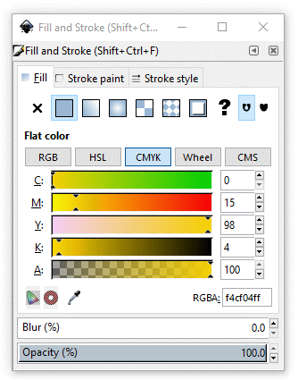
<Shift>-drag left to desaturate the magenta in the
color mix.
Adjusting the saturation lets you change the strength of a color without
affecting the hue. (However, if you drag a slider that is set to 0%, you will
change the hue or color of the object, rather than the color’s
saturation.)
Click away from the artwork, and choose File >
Save.
Magenta desaturated.
Painting with Patterns
In addition to process and spot colors, you can also create your own pattern
swatches. Inkscape provides features with which you can create your own
patterns.
Now you’ll fill some objects with a pattern, working with the hat in
the top right rectangle.
Using the Select tool (), click in the center of the hat ribbon shape
in the top right rectangle. The Fill box in the Attribute box shows that the
shape’s current fill is a very light yellow (Y = 4). Attribute box shows a very light yellow fill.Hat ribbon selected.Fill palette shows a very light yellow fill.
We will now create a new Inkscape-style repeating pattern from an a
previously made .svg file.
Download and open file Colorfetti.svg.
You now have two Inkscape workspaces open, one containing the Colorfetti
pattern and the other, the collection of four hats.
Colorfetti.svg image
Click on the image and choose Edit > Copy or press
<Ctrl>-C to copy the image to the clipboard.
Return to the Hats.svg window and paste the copy of the
Colorfetti image to your workspace. Position the cursor at the place where
you want to paste the image, and then paste (Edit > Paste or
press <Ctrl>-v — I pasted the image to the right of the four
hats.)
Colorfetti images pasted into the Hats.svg
workspace.
With the Colorfetti image still selected, choose Object >
Pattern > Objects to Pattern. You’ll see the bounding
box handles flicker as the image is converted into a pattern and stored in
the Pattern Swatch library. You can now use the Colorfetti image as a fill
pattern.
Delete the copied Colorfetti image. Colorfetti still resides in the
Pattern Swatch library. If the ribbon area of the hat is deselected, reselect
it. Click on the Pattern button. The Colorfetti pattern fills the
ribbon band.
The Colorfetti pattern now fills the ribbon band.
Now select the background of the top right rectangle. Make sure that the
Fill palette is selected, and click the same pattern swatch so the
rectangle’s fill is with the same pattern.
The Colorfetti pattern now fills the background.
(Background hasn’t been deselected yet.)
Applying a Gradient
Now you’ll apply an orange-to-yellow gradient to the first block in
the illustration.
In the top left rectangle, select the squiggly curve around the hat with
the Node tool (), and make sure that the Fill palette is active.
Select the squiggly curve with the Node tool.
Click on the Radial gradient button (). Note that two control circles and
a control square appear over the hat image. These control points will help
you create a gradient background.
Gradient controls appear to help you create a gradient
background.
Click on one of the two control circles (it doesn’t matter which
one). The circle turns red when the cursor hovers over it, and turns blue
when you click on it. The Fill palette appears, awaiting you to define
the outer color of the gradient’s span. Gradient controlsGradient control red circleGradient control blue circle
The control circle represents the outer color limit of the gradient
that you are creating. We will make it orange. Click on the CMYK tab. The
CMYK color percentages are C = 0%, M = 54%, Y = 92%, K = 1%, and we want the
opacity A = 100% (fully opague orange).
Orange background.
To complete the gradient, click on the square control in the middle of
the hat image. The control turns red when the cursor hovers over it, then
blue when you click on it, showing that it’s active.
Blue square active.
With the square active, we can set the color of the center of the
radial gradient. Set it to yellow, C = 0%, M = 0%, Y = 100%, B = 0%, and A =
100%.
Set the gradient center to yellow.
Click off the upper left hat image to deselect it. Here is our
result.
Yellow-to-orange gradient result.
Painting with the Pattern Along Path Extension
Patterns can be applied to existing paths or objects using an
extension. Extensions are scripts or programs that have been added to
Inkscape to enhance its capabilities and functionality.
Here, we will use the Pattern Along Path extension.
Download and open file OliveBranch.svg
in a new Inkscape window (File > New).
Close-up of olive branch segment.
Select the figure of the olive branch with the Select tool
(). It is a small figure. Don’t be surprised at its size. There
is a reason for it as you will see shortly.
Select the olive branch.
Choose Edit > Copy or press
<Ctrl>-c to copy the figure to your computer’s clipboard.
Return to the screen that contains the four hats, position the cursor
where you can easily work with the copied and pasted figure, and press
<Ctrl>-v to paste the laurel branch figure into your workspace.
Pasted olive branch.
Select both the olive branch figure and the edge of the squiggly
area around the lower right-hand hat. Remember: when selecting more than
one object, use <Shift>-click to include other objects to your
first one. See Tutorial 2, Selecting Objects, for review.
Select the olive branch and the squiggly area under the
lower right-hand hat.
Choose Extensions > Generate from Path >
Pattern along Path… The Pattern along Path dialog box appears.
Select Copies of the pattern: Repeated, Deformation type:
snake, and check the boxes for Duplicate the pattern before
deformation and Live preview to view different settings applied
to the artwork without closing the dialog box.
Pattern along Path dialog box.
Click the Apply button. The " 'Pattern
along Path' working" box appears for a few seconds while the
extension program creates duplicates of the olive branch figure and places
them over the edge of the squiggly area. Pattern along Path diagnostic box.
The diagnostic box disappears and the edge of the squiggly area is
now dressed with an olive-branch design.
Result.
Try out different settings to see how they affect the pattern on the
squiggly shape, such as Single, stretched, or changing the Space
between copies, Normal offset, and/or Tangential offset.
When you’re satisfied with the settings, click OK to apply
them to the artwork.
Choose File > Save.
Close the file.
You’ve completed painting the hat artwork using a variety of painting
tools. Compare your results with the illustration at the very beginning of
this lesson.
Final version of artwork.
See these topics to learn more about the following painting
techniques:
For (much) more information on using extensions and creating your
own custom designs, see Help > Inkscape Manual > 22.
Extensions.
For more information on transparency, styles, appearance
attributes, effects, and how to create other blending effects, see
Help > Inkscape Manual > 10. Attributes.
Review Questions
Describe at least three ways to fill an object with color.
How do you name a new color?
How do you paint a shape with a transparent color?
How can you desaturate a CMYK color?
Review Answers
To fill an object with color, select the object and the Fill or
Stroke paint tab in the Fill and Stroke paint palette. Then do
one of the following:
Click a color in the color bar in the Color palette.
Drag the color sliders or type in values in the text boxes in the
Fill palette.
Click a color swatch in the Swatches palette.
Select the Dropper pointer (), and click a color in the
artwork.
To name a color, click on the Swatch icon in the Fill palette (). Click in the Name
field in the Swatch fill palette to highlight the number, type the name of
the new color in the name field, and click away from the field to set the
name.
To paint a shape with a transparent color, select the shape and fill it
with any color. Then adjust the Opacity (%) control at the bottom of
the Fill or Stroke paint palette to less than 100%.
To desaturate a CMYK color, select the color and drag its slider to the
left in the Fill or Stroke paint palette. Dragging the slider causes the
other sliders to move in tandem so the hue won’t change.


{kind=link}
{kind=link}

 ) in the toolbox, and then click on the
rectangular border around the top left block in the artwork to select the
object. Choose Object < Fill and Stroke.
) in the toolbox, and then click on the
rectangular border around the top left block in the artwork to select the
object. Choose Object < Fill and Stroke.

 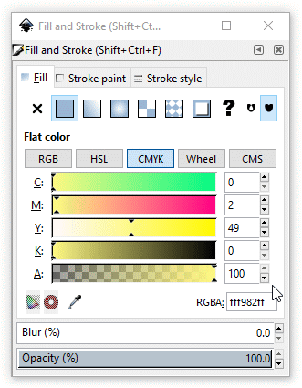
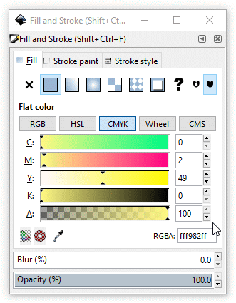

 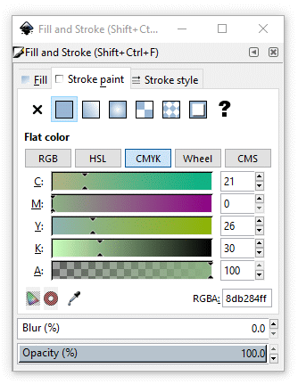
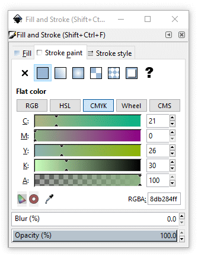

 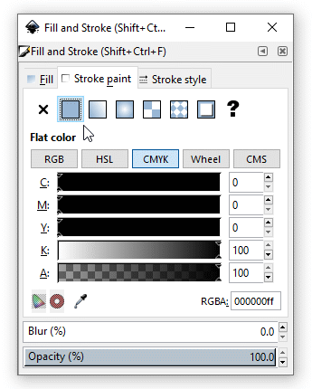
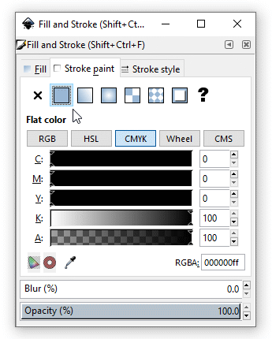
 ).
The icon now has a dotted outline showing that it is active ().
).
The icon now has a dotted outline showing that it is active ().


 ). The Swatch
palette comes up with the new light orange color added to the Swatch
fill list.
). The Swatch
palette comes up with the new light orange color added to the Swatch
fill list.


 ).
).


{kind=link}
 ), and make sure that the Fill palette is active.
), and make sure that the Fill palette is active.
 ). Note that two control circles and
a control square appear over the hat image. These control points will help
you create a gradient background.
). Note that two control circles and
a control square appear over the hat image. These control points will help
you create a gradient background.


{kind=link}